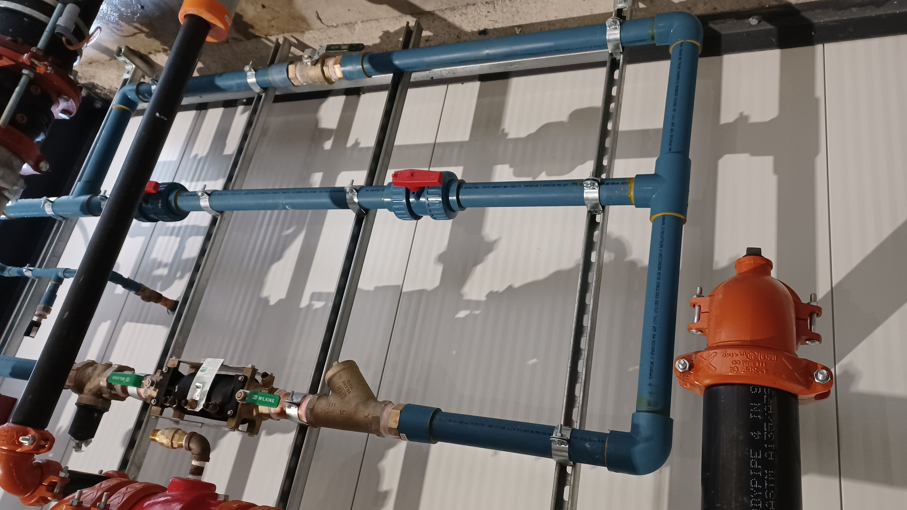

Entrée d'Eau
Nous proposons des services complets pour la vanne principale d’eau, assurant une installation correcte, une réparation rapide et une maintenance préventive. Que vous remarquiez des fuites, des difficultés à couper l’eau ou un mécanisme usé, nous garantissons un fonctionnement optimal de votre réseau d’alimentation, indispensable pour protéger votre habitation contre les dommages liés à l’eau.
- Diagnostic des fuites et inspection du mécanisme de la vanne
- Réparation ou remplacement de composants défectueux
- Installation de nouvelles vannes principales conformes aux normes
- Contrôle de pression et entretien préventif
Galerie
×